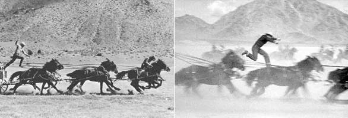
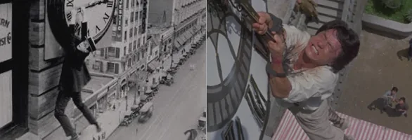
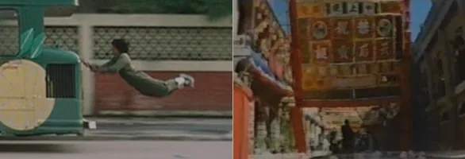
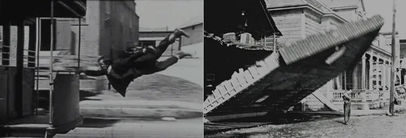
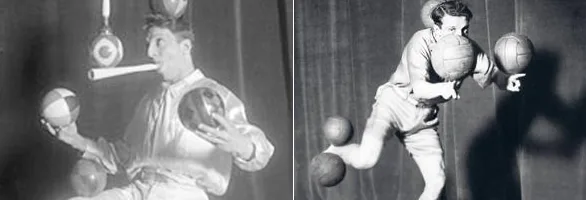

History and
training.
The four topics from the original website – introduced briefly, with full details available to expand.
The history of
stunt performers
Stunts were born in the circus: circus artists and travelling entertainers were their first performers. When daring acrobats stepped in front of early film cameras, they created the profession of the stunt performer, or cascadeur.
Read more
The first stunt performer in cinema history appeared in “The Count of Monte Cristo” in 1908. In a spectacular scene, the skilled acrobat had to dive headfirst from a cliff into the sea.
The French word “cascadeur” comes from the circus world. Cascades are daring jumps performed with extensive training and precise body control to avoid serious injury as far as possible. Early action performers also included the entertainers Buster Keaton, Harold Lloyd and Charlie Chaplin.
From the 1930s onwards, Yakima Canutt became a key figure in stunt training. His work established important standards for professional stunt techniques. Harold Lloyd’s scene in “Safety Last” from 1923 also became famous: safety platforms and wires were already required for filming permission at that time.




Famous stunt performers
Charlie Chaplin, Buster Keaton, Yakima Canutt, Harold Lloyd, John Ford, Gary Cooper, Harry Piel, Yuen Biao, Sammo Hung, Jackie Chan and Felix Baumgartner.
How do I become
a stunt performer?
Entry into the profession usually involves placements and mentoring with experienced stunt performers, specialist schools or several years of cascadeur training at a circus school.
Read more
How do you learn to jump from bridges, fall through glass or move safely in an action scene? Ilian Simeonow recommends that newcomers start with a placement with a professional: experienced stunt performers guide, train and prepare young people. A five-and-a-half-year cascadeur programme at a circus school is a particularly intensive training route.
Private stunt schools offer additional training and workshops. Organisational skills, teamwork and flexibility are essential.
Requirements
- Talent and ambition
- Body control and coordination
- Dexterity and reactions
- An interest in learning new skills
- Safety awareness and self-confidence
Daring, fearlessness and recklessness are not desirable qualities in themselves. Injury is an occupational risk, but risks must remain manageable: stunt performers protect both themselves and the entire team.
Insurance & planning ahead
Stunt performers work as employees or freelancers. Because the profession is physically demanding, planning for periods without work and for a career after active performing is part of the job.
The history of
circus arts
Circus artistry is an art form that uses highly specialised physical and mental skills as a means of expression. It shapes circus, variety and live events.
Read more
Circus disciplines include acrobatics, balancing, contortion, clowning, animal training, speed drawing, quick-change acts, knife throwing, trick shooting, fakir acts, juggling and magic.
Acrobatics
Acrobatics is a movement-intensive form of expression, characterised particularly by rotations around the body’s longitudinal and transverse axes. Its forms include cascadeur acts, teeterboard, trampoline, horizontal bar, parterre acrobatics, tossing, aerial acrobatics, Russian bar and Russian swing.
Balancing & juggling
Balancing requires highly developed coordination when balancing your own body, other people or props. Disciplines include high wire and tightrope, perch, unicycle, rola bola, freestanding ladder and artistic cycling. Juggling combines throwing, catching and rotating objects, for example with diabolos, devil sticks or clubs.

How do I become
a circus artist?
Training depends greatly on age, goals and personal circumstances. State schools, independent circus schools, workshops and children’s circuses offer different routes.
Read more
State-recognised circus schools offer multi-year, full-time programmes leading to a qualification. These often start at an early age and can be combined with regular schooling. Independent circus schools also offer full-time programmes, as well as evening classes, weekend courses and further training.
Children’s circus
Children’s circuses offer a playful introduction to circus arts and theatre. Children, teenagers and adults can develop acts alone or with friends and family and present them at celebrations.
Other routes
Those with talent and the necessary personal qualities can also join a circus directly and train with its artists in everyday practice. This route is demanding and requires perseverance, initiative and good collaboration.
Working life
Circus artists often work freelance. The physical demands make it important to plan for periods without engagements and for life after an active performing career. Many later become coaches or teachers, or continue working in circus, variety and events.